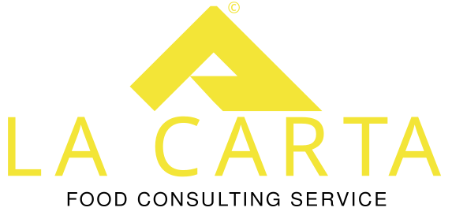
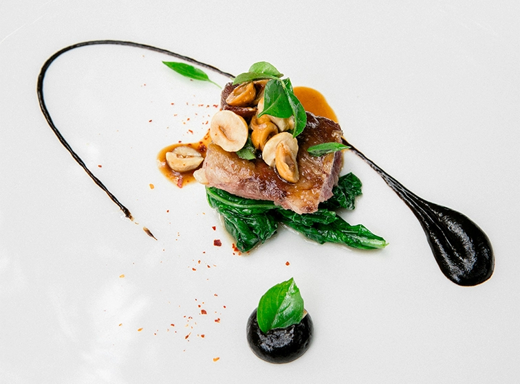
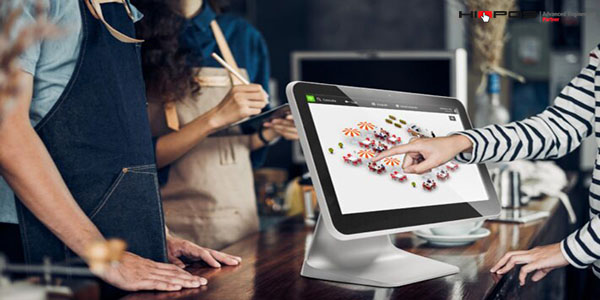
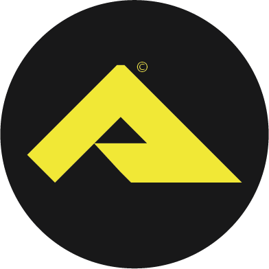
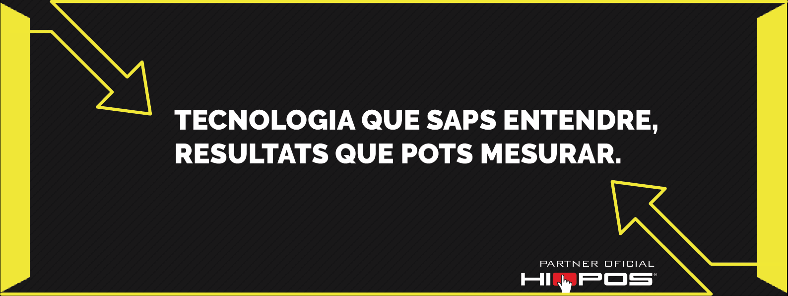
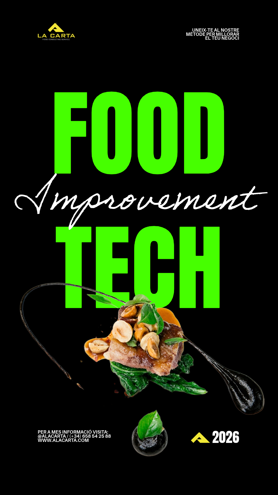
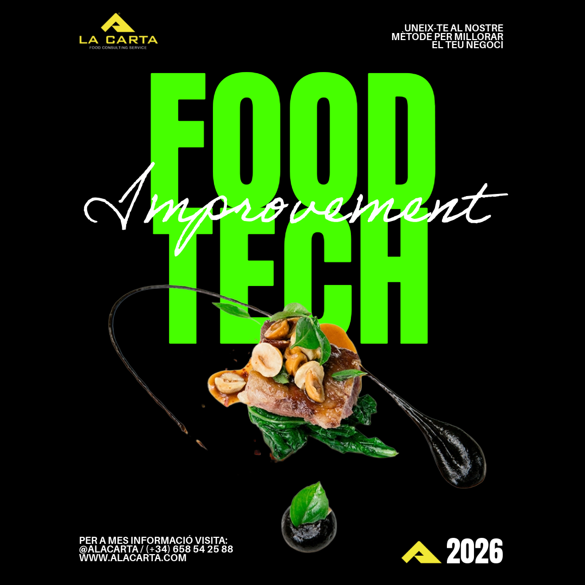

Manual d'Identitat Visual
Llibre d'Estil Corporatiu — Edició 2025
V 1.0 — Confidencial
Estructura del Manual d'Identitat Visual corporatiu
La nostra identitat es construeix sobre tres pilars: tecnologia, gastronomia i rendibilitat.
Ajudem propietaris de restaurants, bars i negocis del sector F&B a modernitzar les seves operacions, optimitzar els seus beneficis i abraçar la digitalització de manera senzilla i efectiva. Som el pont entre el programari Hiopos i el màxim rendiment del negoci.
Aspirem a ser la consultoria de confiança per a tots els professionals del sector hostaleria que busquen créixer de forma sostenible, intel·ligent i digitalitzada. Volem que cada client que treballi amb A La Carta vegi un increment mesurable dels seus resultats.
No venen software: oferim èxit. Cada solució que proposem va acompanyada de formació, suport i estratègia per garantir que la tecnologia treballi per al client, no al contrari. A La Carta és soci de negoci, no un proveïdor més.
Sempre a l'avantguarda de les solucions tecnològiques per a hostaleria.
Cada acció que proposem té un impacte directe en els resultats del client.
Som consultors, no venedors. El client és sempre el centre de la nostra feina.
Qualitat i professionalitat en cada punt de contacte amb la nostra marca.
A La Carta ocupa un espai únic al mercat: combina el rigor tecnològic d'un integrador de software professional amb la calidesa i el coneixement del sector de la gastronomia. La nostra paleta negre-groc communica autoritat, energia i distinció. Refusem l'estètica genèrica de la consultoria tradicional per adoptar una identitat visual industrial, neta i atrevida.
Normes d'ús, espai de respecte, versions permeses i usos prohibits.


L'espai mínim de respecte al voltant del logotip és equivalent a l'alçada de la lletra "A" de "A LA CARTA". Cap element gràfic, text o imatge pot envair aquesta àrea. Això garanteix la llegibilitat i l'impacte visual de la marca en totes les seves aplicacions.
Codis cromàtics oficials extretes de l'anàlisi del logotip i les targetes de visita.
Sistema tipogràfic de tres fonts amb jerarquia visual clara i funcions diferenciades.
📌 Filosofia: Helvetica és la veu institucional de La Carta. Neta, sense serif, atemporal. Comunica autoritat i modernitat sense estridències. S'usa exclusivament per a títols i elements de capçalera amb alt impacte visual.
A La Carta és la consultoria gastronòmica que necessites per transformar el teu restaurant o bar en un negoci rendible i digitalitzat. Treballem amb tu des del primer dia per implementar les millors solucions tecnològiques del mercat, adaptades a la teva realitat.
📌 Filosofia: BankGothic és la font tècnica i industrial de A La Carta. Evoca precisió, tecnologia i dades. S'usa exclusivament per a informació de contacte, codis de referència, números de telèfon, adreces d'email i qualsevol dada alfanumèrica tècnica. En entorns digitals on BankGothic no és disponible, usar Courier New com a alternativa monoespaciada.
Directrius per a la selecció d'icones, fotografies i recursos visuals de la marca.

Plats presentats amb llum natural, fons neutres (negre, gris o blanc). Enfocament artístic. Evitar fotografies genèriques de stock. Prioritzar la qualitat visual i l'autenticitat. Temperatura de color càlida però controlada.

Pantalles de Hiopos, TPVs i hardware en entorns de treball reals. Composicions netes, fons foscos o neutres. Llum artificial dramàtica. Estètica industrial i tecnològica. Ressaltar la interfície del producte.
Interiors de restaurants moderns, personal professional i propietaris en acció. Fotografia documental i autèntica. Evitar posats artificials. Tonalitats càlides amb alt contrast. Reflectir èxit i professionalitat.
✓ Aplicar un overlay negre semitransparent (30–50% opacitat) sobre fotografies que s'usin com a fons per garantir la llegibilitat del text.
✓ Filtre de contrast elevat i lleugera desaturació per integrar les imatges amb la paleta cromàtica corporativa.
✗ No usar fotografies amb fons de colors saturats que entrin en conflicte amb el groc corporatiu.
✗ Evitar imatges de stock genèriques amb estètica artificial o poc autèntica.
Com parla A La Carta. Com es comunica. Com es relaciona amb els seus clients.
Parlem amb autoritat però sense arrogància. Sabem del que parlem i ho demostrem amb dades i exemples reals.
Usem el "tu" i el "nosaltres". Tractem el client com a soci, no com a consumidor.
No usem jerga tecnològica innecessària. Expliquem les coses de manera simple, perquè el client entengui el valor real.
Sempre parlem de beneficis tangibles: augment de facturació, reducció d'errors, més eficiència. Mai de característiques abstractes.
"Hola Jordi, t'escric perquè veig que el teu restaurant podria multiplicar x2 els tiquets de taula amb una gestió intel·ligent de A La Carta. En 30 minuts et mostro com."
"Sabies que el 73% dels restaurants que digitalitzen la seva gestió augmenten els beneficis en el primer trimestre? Nosaltres t'ajudem a ser-ne un."
"La implementació de Hiopos al teu negoci es tradueix en: menys errors de comanda, servei 40% més ràpid i una visibilitat total de les teves vendes en temps real."
"El nostre software POS implementa un sistema de gestió de base de dades relacional amb API REST per a la integració multicanal..."
"Ei! Tenim un programari súper guay que et canviarà la vida! 🔥🚀 No te'l pots perdre!!"
"Som distribuïdors oficials de Hiopos des de fa anys i oferim un servei integral de consultoria en el sector de la restauració..."
Català com a idioma principal. Castellà per a mercats fora de Catalunya. Anglès per a contextos internacionals i materials corporatius generals (tagline, logotip).
Sempre "tu" en comunicació directa. Mai "vostè" tret de contextos molt formals. En castellà, "tú". Crear proximitat sense perdre professionalitat.
Permesos en RRSS i WhatsApp Business, de forma moderada (màx. 2 per missatge). Prohibits en documents corporatius, propostes i comunicació formal.
Papereria corporativa, elements digitals i aplicació de marca en el software Hiopos.


Mida: 85 × 55 mm · Acabat: Matte Laminate + Spot UV Groc · Paper: 350gr

Logosímbol centrat · fons negre · 1:1 ratio · mínim 400×400px
1584×396px · Logo esquerra + tagline centrat sobre fons negre + textura
1080×1920px · Logo a la part superior · text en zona central
1080×1080px · Logo + textura fons + text Helvetica/Raleway